Cosmologie
Model
Can be 1, 2, 3, or 4. Default value is Model = 1.
1for CPL model2for Cardassian model3for Interacting DE Model4for Holographic Ricci Scale with CPL
H0 float
float defines the value of 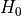 in Mpc/km/s. Default value is 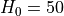.
omega float
float defines the value of 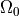. Default value is 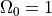.
lambda (or omegaX) float
float defines the normalized value of 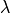. (for a flat universe 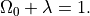) Default value 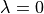.
omegaK float
float defines the normalized value of the curvature of the Universe 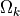
wX (q, or w0) float
If Model is equal to 1, float defines the first parameter in the CPL model.
If Model is equal to 2, float defines the  parameter in the Cardassian model.
If Model is equal to 3, float defines the 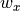 parameter in the Interacting DE model.
If Model is equal to 4, float defines the 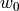 parameter in the Holographic Ricci scale with CPL.
parameter in the Cardassian model.
If Model is equal to 3, float defines the 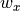 parameter in the Interacting DE model.
If Model is equal to 4, float defines the 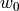 parameter in the Holographic Ricci scale with CPL.
wa (n, delta, or w1) float
If Model is equal to 1, float defines the second parameter in the CPL model.
If Model is equal to 2, float defines the  parameter in the Cardassian model.
If Model is equal to 3, float defines the 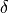 parameter in the Interacting DE model.
If Model is equal to 4, float defines the
parameter in the Cardassian model.
If Model is equal to 3, float defines the 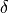 parameter in the Interacting DE model.
If Model is equal to 4, float defines the  parameter in the Holographic Ricci scale with CPL.
parameter in the Holographic Ricci scale with CPL.
Additional remarks on the Cosmologie identifier
Model 1
Using the so-called CPL parameterization
Certainly, in the code 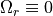, always.
Model 2
The modified polytropic Cardassian Universe (see Gondolo & Freese, 2003) is a generalization of the original Cardassian model of Freese & Lewis (2002). In such Universe the Hubble parameter is given by:
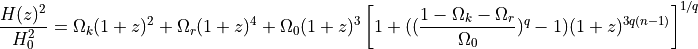
Model 3
In the interacting Dark Energy model (Citation needed!) we have
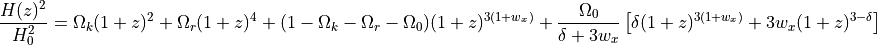
Model 4
Holographic Ricci Scale with CPL (Citation needed!):
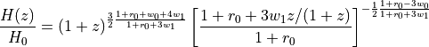
In this case,
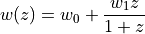
and
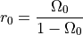